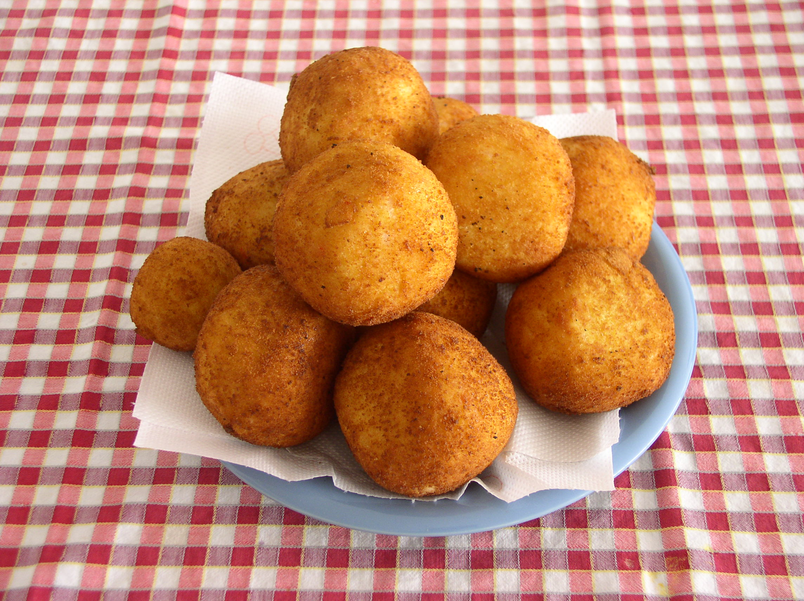

Back to recipes
Arancini

Description
An Italian rice ball made with white wine risotto, and a gooey mozzarella center. Fantastic for lunch or dinner -
can be frozen.
Ingredients
- 1 tablespoon olive oil
- 1 small onion, finely chopped
- 1 clove garlic, crushed
- 1 cup uncooked Arborio rice
- ½ cup dry white wine
- 2½ cups boiling chicken stock
- ½ cup frozen green peas
- 2 ounces finely chopped ham
- salt and pepper to taste
- ½ cup finely grated Parmesan cheese
- 1 egg, beaten
- 1 egg
- 1 tablespoon milk
- 4 ounces mozzarella cheese, cut into 3/4 inch cubes
- ½ cup all-purpose flour
- 1 cup dry bread crumbs
- 1 cup vegetable oil for deep frying
Steps
- Heat the olive oil in a large saucepan over medium heat. Add onion and garlic, and cook, stirring until
onion is soft but not browned. Pour in the rice, and cook stirring for 2 minutes, then stir in the wine, and
continue cooking and stirring until the liquid has evaporated. Add hot chicken stock to the rice 1/3 cup at
a time, stirring and cooking until the liquid has evaporated before adding more.
- When the chicken stock has all been added, and the liquid has evaporated, stir in the peas and ham. Season
with salt and pepper. Remove from the heat, and stir in the Parmesan cheese. Transfer the risotto to a bowl,
and allow to cool slightly.
- Stir the beaten egg into the risotto. In a small bowl, whisk together the remaining egg and milk with a
fork. For each ball, roll 2 tablespoons of the risotto into a ball. Press a piece of the mozzarella cheese
into the center, and roll to enclose. Coat lightly with flour, dip into the milk mixture, then roll in bread
crumbs to coat.
- Heat oil for frying in a deep-fryer or large deep saucepan to 350 degrees F (175 degrees C). Fry the balls
in small batches until evenly golden, turning as needed. Drain on paper towels. Keep warm in a low oven
while the rest are frying.